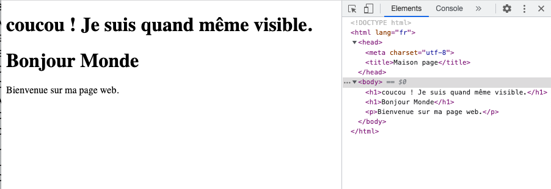

Introduction à html
- François Brucker
- Yi Mei Jiang
- Théophile Bonneau
Principes du html.
On ne traitera pas tous les détails. Il existe pleins de tutos pour apprendre les bases sur l'internet mondial :
Tutoriels généraux sur html/css :
- https://www.internetingishard.com/
- https://developer.mozilla.org/en-US/docs/Learn/Getting_started_with_the_web
- https://www.theodinproject.com/paths/full-stack-javascript/courses/intermediate-html-and-css
- https://fr.learnlayout.com/ petits tutos sur le layout css. Sympa à voir mais on utilise le plus souvent des framework web or gérer le layout.
- le http://www.thenetninja.co.uk/ a plein de tutos sur le web.
- http://www.w3schools.com/ est le site de référence sur tout ce qui concerne html/css.
Avant de choisir un tuto, Vérifier bien cependant qu'ils traitent de la dernière version, ici html5 et css3.
Premier fichier html
Prenez votre éditeur de texte favori et créez un nouveau fichier que vous nommerez index.html, et collez- le contenu suivant :
<!doctype html>
<html>
<head>
<meta charset="utf-8"/>
<title>Maison page</title>
</head>
<body>
<h1>Bonjour Monde</h1>
<p>Bienvenue sur ma page web.</p>
</body>
</html>
Vous pouvez maintenant l'ouvrir en tant que fichier texte avec chrome :
- "menu fichier > ouvrir un fichier ..."
- dans dans explorateur de fichier, cliquez droit sur le fichier pour l'ouvrir avec chrome.
Si vous modifiez un fichier, chrome ne le mettra par à jour immédiatement. Il faut l'actualiser. Vous pouvez le faire dans : "menu Afficher > Actualiser cette page"
Vous voyez votre fichier html être interprété par chrome :
félicitations !
Vous venez d'écrire votre 1er fichier html constitué :
- d'un titre
<h1>Bonjour Monde</h1> - un paragraphe
<p>Bienvenue sur ma page web.</p>
Balises html
Le html est un langage à balises, par exemple les balises <head></head> ou encore <body></body> de l'exemple. Il en existe de nombreuses.
Principales balises
Formes de balises
Les balises peuvent être formées de deux façons. La plus classique comporte deux balise et un contenu :
Première forme d'une balise
Une balise ouvrante et une balise fermante :
<nom>
[contenu de la balise]
</nom>
Où nom est le nom de la balise, par exemple : html, head, body ou encore p. Le contenu de la balise peut être vide, composé de texte ou encore d'autres balises.
Il existe également une autre forme, composé d'une unique balise auto-fermante :
Deuxième forme d'une balise
Une balise ouvrante et une balise fermante :
<nom />
Cette balise n'a pas de contenu, comme la balise de nom meta de l'exemple. Son intérêt réside dans ses attributs.
Attributs d'une balise
En plus de sa définition, une balise peut-être déclarée avec des attributs de la forme : clé="valeur". Dans l'exemple, la balise de nom meta possède l'attribut charset="utf-8" qui signifie que le texte est écrit en utf-8 (ce qui devrait être le cas si vous utilisez un éditeur de texte récent).
L'encodage utf-8 est l'encodage par défaut de tout texte, vous ne devriez pas utiliser autre chose.
Arbre DOM
Un fichier html est toujours composé de deux objets :
- le doctype qui définit les balises que l'on peut utiliser. Dans l'exemple c'est
<!doctype html>: on écrit du html. - la balise
<html></html>qui est la racine de notre document.
Les balises d'un fichier html s'organisent en arbre avec :
- la balise html comme élément racine
- les balises composant le contenu de html comme ses enfants
- on progresse dans l'arbre récursivement.
On appelle cette organisation arbre DOM. Dans l'exemple cet arbre correspond à :
html
├── head
│ ├── meta
│ └── title
└── body
├── h1
└── p
On peut avoir plusieurs fois la même balise comme enfant. Il n'est pas rare d'avoir une balise <body></body> ayant plusieurs balises <p></p> comme enfants.
Structure d'un fichier html
Un fichier html minimal est constitué :
- d'un doctype qui détermine les noms des balises utilisables
- d'une balise balise
<html></html>ayant exactement deux enfants :- une balise
<head></head> - une balise
<body></body>
- une balise
La balise <head></head> est l'entête du fichier html et contient les déclarations utiles au <body></body> qui contient les balisent qui seront représentées à l'écran.
head
<head>
<meta charset="utf-8"/>
<title>Maison page</title>
</head>
Au minimum, la balise <head></head> va contenir deux enfants :
- la balise meta qui détermine l'encodage de caractère. Même si ce sera toujours utf-8, il faut le dire
- la balise
<title></title>qui contient le nom de la page (ce qui sera écrit comme titre d'onglet dans le navigateur)
On mettra souvent également dans cette balise les fichiers css qui définissent le style de la page et les bibliothèques javascript à utiliser.
body
La balise body peut être vide (et dans ces cas là rien ne sera affiché), ou contient le contenu de la page html.
Validation du html
Il peut être compliqué d'écrire du html correct, c'est à dire :
- sans erreur
- respectant les préconisations, c'est à dire sans warning
Vérifions que notre exemple a bien écrit du html correct. Il est en effet très (trop) facile d'écrire quelque chose qui ressemble à du html sans en être. Pour cela on utilise le validateur du W3C.
Allez sur le site du validateur du W3C et choisissez "Validate by direct input" et copiez/collez le code html. Puis cliquez sur "check".
Il y a un soucis, il vous demande d'ajouter la langue dans laquelle est écrit votre texte. Faisons le :
<!doctype html>
<html lang="fr">
<head>
<meta charset="utf-8"/>
<title>Maison page</title>
</head>
<body>
<h1>Bonjour Monde</h1>
<p>Bienvenue sur ma page web.</p>
</body>
</html>
Re-tentez une validation.
Tout devrait être ok.
Re-Félicitation, vous venez d'écrire votre 1er fichier html correct !
Souvent, il existe des plugins pour les éditeurs de texte qui valident automatiquement le html. C'est le cas par défaut avec vscode par exemple.
Le navigateur qui lit de l'à-peu-prêt-html ne peut pas l'interpréter directement, il est obligé de faire des suppositions sur ce que vous avez voulu dire.
Si par exemple, vous placez des balises de présentation, comme un titre par exemple, dans la balise <head></head> elle devrait être ignorée et ne pas être représenté à l'écran. Vérifiez que ce n'est pas le cas en modifiant le fichier exemple.html :
<!doctype html>
<html lang="fr">
<head>
<meta charset="utf-8"/>
<title>Maison page</title>
<h1>coucou ! Je suis quand même visible.</h1>
</head>
<body>
<h1>Bonjour Monde</h1>
<p>Bienvenue sur ma page web.</p>
</body>
</html>
Puis en l'ouvrant avec chrome
Vous devriez voir quelque chose du genre (avec les outils de développements ouvert) :

Chrome a d'autorité placé le titre de la balise head dans body... Il a souvent raison dans ces modifications mais cela comporte plusieurs effets de bords problématique :
Problème de l'à-peu-prêt-html :
- ce n'est ce que vous avez écrit qui est interprété, c'est autre chose
- les petites erreurs vont s'accumuler et, au moment où vous ne vous y attendrez pas, plus rien ne fonctionnera. Il sera alors très difficile de trouver l'erreur puisqu'il va y en avoir tout un tas les unes à la suite des autres
- chaque navigateur fera des suppositions des suppositions différentes et le rendu sera différent
Pour éviter cela, il faut toujours faire en sorte que votre html soit correct. Cela vous évitera bien des soucis plus tard.
Balises classiques
Documentation
Il existe de nombreuses balises html, qui structurent le texte en blocs. Citons en quelques unes parmi les plus couramment utilisées :
- titres : balises
<h1>[titre]</h1>à<h6>[titre]</h6> - paragraphes : balise
<p>[texte]</p> - liens : balise
<a href="[url du lien]">[texte du lien]</a> - listes non ordonnées : balise
<ul><\ul>pour déclarer la liste et chaque item est une balise<li></li> - listes ordonnées : balise
<ol><\ol>pour déclarer la liste et chaque item est une balise<li></li> - image : balise auto-fermante
<img src="[url de l'image]"/> - tableaux : plusieurs balises régissent la création de tableaux en html.
D'autres balises permettent de mettre en lumière une partie d'un texte. Citons en deux fondamentaux :
- emphase : balise
<em>[texte]</em>permet de mettre en valeur un élément du texte (italique par défaut) - accentuation : balise
<strong>[texte]</strong>: permet d'accentuer un élément du texte